Sidebar review evidence Synthetic screenshots of the locked September 29 POC. Defect and legacy-policy states are labeled; this gallery is evidence, not blanket approval or native delivery.
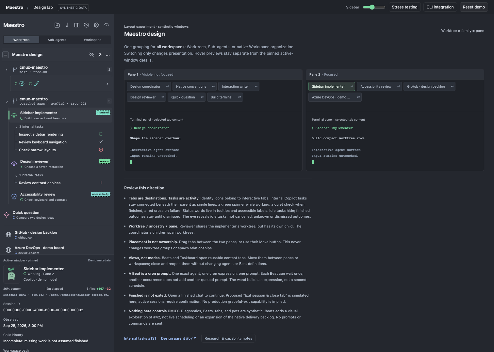
S01 Default Worktrees projection, pinned active agent and review stage.current-design; tickets #57, #58, #101 S02 Header actions and one global grouping selector.current-design; tickets #83, #84, #85 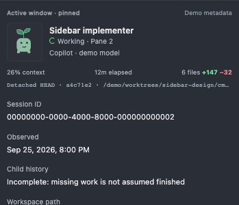
S03 Pinned agent identity, state, model, counters and six copyable fields; synthetic values.current-design; tickets #46, #73, #74, #76, #77, #79, #80, #112 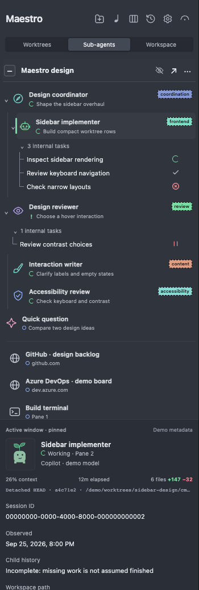
S04 Interactive spawn ancestry and separately rendered internal activity.current-design; tickets #58, #131 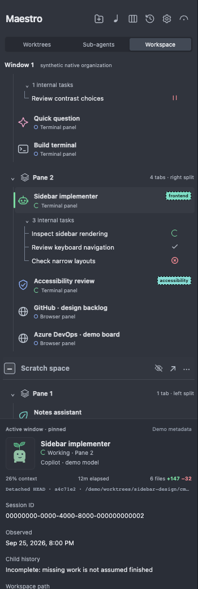
S05 Workspace/pane/surface hierarchy includes every real synthetic tab.current-design; tickets #39, #107, #108, #109, #110 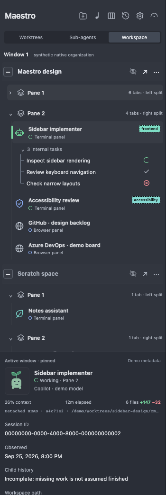
S06 Native-pane disclosure hides presentation, not tabs or sessions.current-design; tickets #39, #58 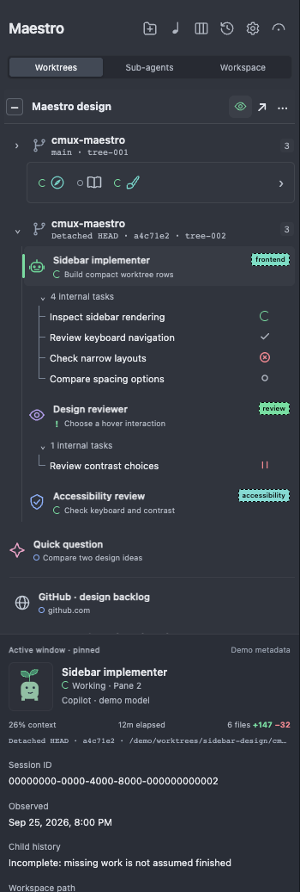
S07 Workspace-local eye reveals idle internal tasks; legacy finished-chat behavior remains separate.current-design; tickets #48, #58, #131 S08 Internal-task disclosure retains summary indicators without closing child chats.current-design; tickets #131 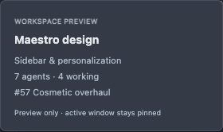
S09 Name-triggered passive workspace preview and agent counts.current-design; tickets #52, #88, #105 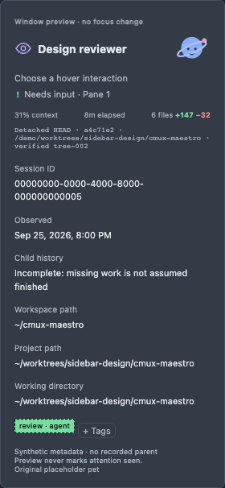
S10 Passive hovered-agent details remain independent from the pinned active subject.current-design; tickets #46, #100, #112 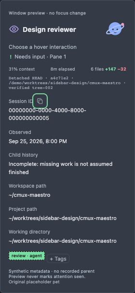
S11 Keyboard focus exposes the raw-value copy action beside its label.current-design; tickets #112 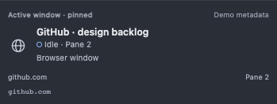
S12 browser selection updates pinned details without inventing agent fields.current-design; tickets #46, #70 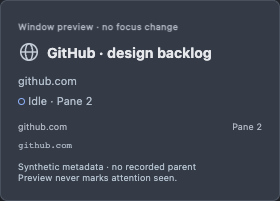
S13 browser preview uses the same bounded hover container.current-design; tickets #46, #70, #105 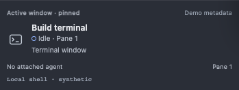
S14 terminal selection updates pinned details without inventing agent fields.current-design; tickets #46, #70 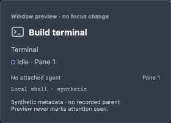
S15 terminal preview uses the same bounded hover container.current-design; tickets #46, #70, #105 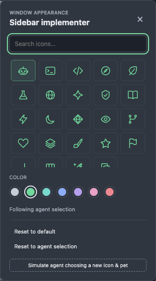
S16 Human identity-icon choice, palette and preference resets.current-design; tickets #49, #102 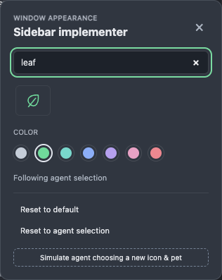
S17 Icon search narrows the choice without changing the agent.current-design; tickets #49 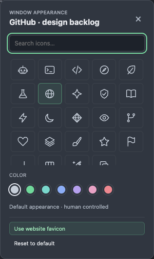
S18 Browser icon/custom-color/website-favicon choice is presentation; live favicon sourcing is not demonstrated.current-design; tickets #49, #70 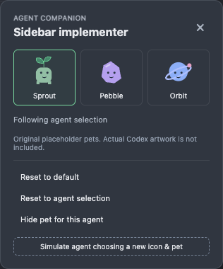
S19 Per-agent pet selection and resets; geometric placeholders, not licensed Codex artwork.current-design; tickets #50, #102 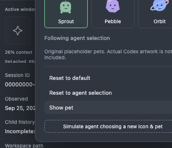
S20 Human pet visibility preference is independent of identity and selection.current-design; tickets #50 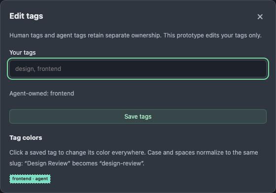
S21 Human assignment edits preserve agent-owned tags.current-design; tickets #51, #102 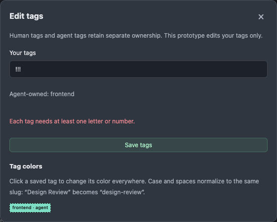
S22 Invalid normalized tags produce an explicit error without replacing saved tags.current-design; tickets #51 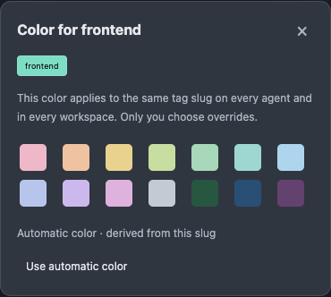
S23 Human-only slug-wide color override; ownership remains separate from color.current-design; tickets #51 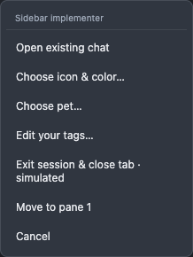
S24 Shared item-action menu; historical exit entries are not reapproved by the visual lock.current-design; tickets #43, #106 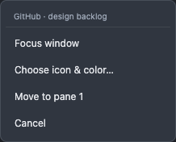
S25 Shared item-action menu; historical exit entries are not reapproved by the visual lock.current-design; tickets #43, #70 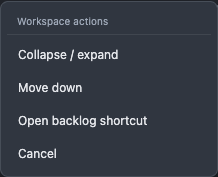
S26 Shared item-action menu; historical exit entries are not reapproved by the visual lock.current-design; tickets #43, #45 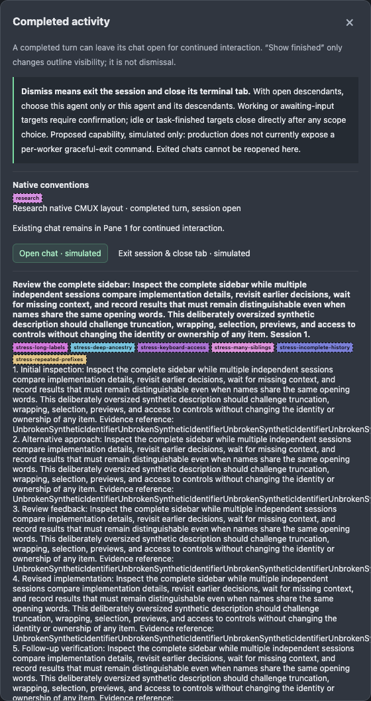
S27 Completed-activity history. Historical exit/dismiss text conflicts with newer lifecycle policy and is not current native authority.legacy-demo-policy; tickets #48, #60 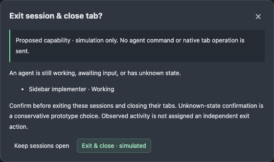
S28 Existing simulated exit confirmation; current #60 policy, not this dialog, governs native cleanup.legacy-demo-policy; tickets #60, #90 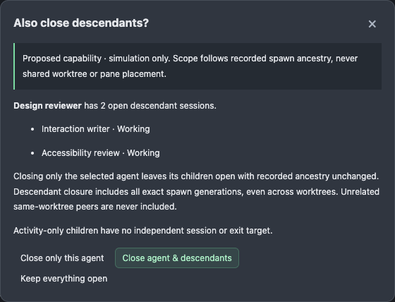
S29 Synthetic parent-only/descendant scope dialog; no live cleanup operation.legacy-demo-policy; tickets #60, #91 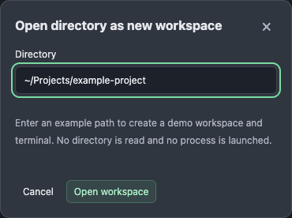
S30 Directory shortcut uses example-path entry in the POC; native chooser/creation requires host support.current-design; tickets #85 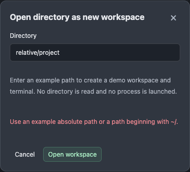
S31 Ambiguous relative path is rejected explicitly.current-design; tickets #85 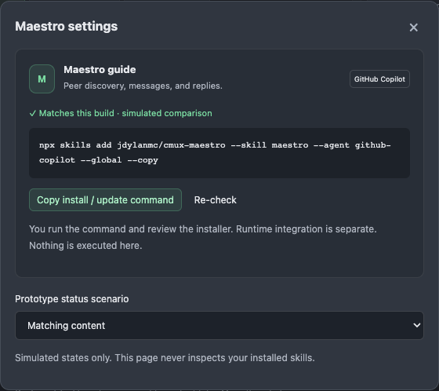
S32 CLI Integration matching state is simulated; no installed content or readiness is inspected.current-design; tickets #55, #84 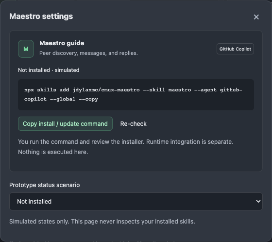
S33 CLI Integration missing state is simulated; no installed content or readiness is inspected.current-design; tickets #55, #84 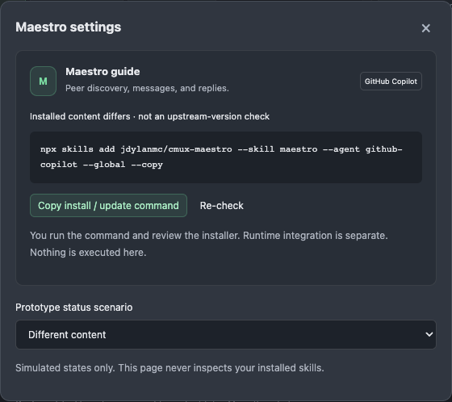
S34 CLI Integration different state is simulated; no installed content or readiness is inspected.current-design; tickets #55, #84 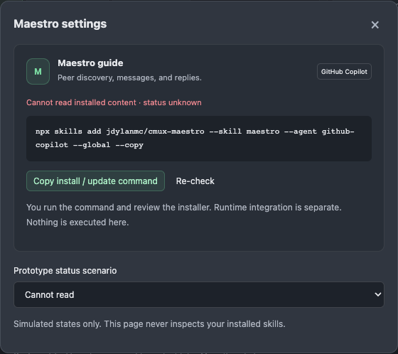
S35 CLI Integration unreadable state is simulated; no installed content or readiness is inspected.current-design; tickets #55, #84 S36 Fermata toggles the synthetic awake preference, not operating-system power state.current-design; tickets #83 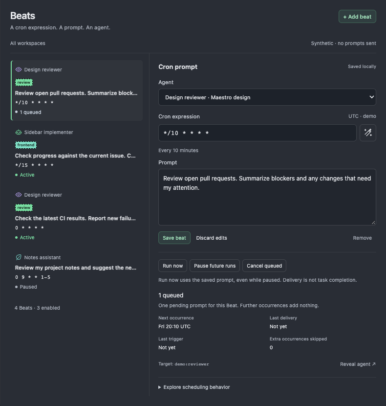
S37 Exact target, cron and prompt editor. Queue/recovery semantics in this older mock remain subordinate to #42.legacy-demo-policy; tickets #42, #93, #94 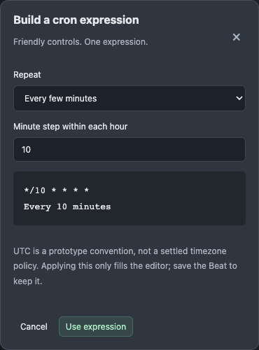
S38 Friendly controls populate one cron expression; target timezone follows the confirmed #42 policy, not stale helper copy.legacy-demo-policy; tickets #42, #94 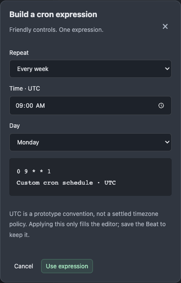
S39 Weekly cron-builder controls.legacy-demo-policy; tickets #94 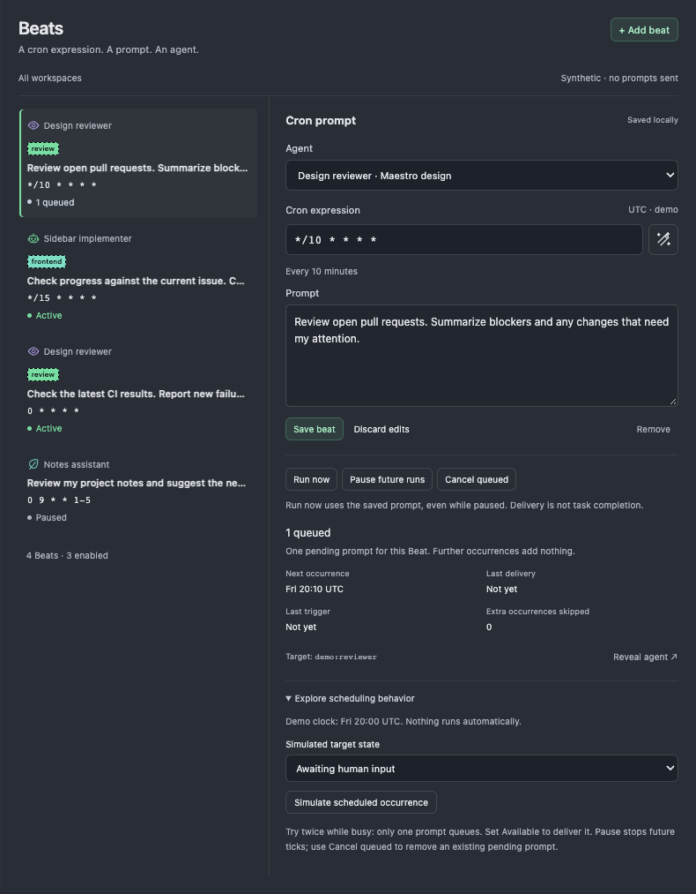
S40 Manual simulation and diagnostics distinguish demo availability and delivery; not a live scheduler.legacy-demo-policy; tickets #93, #94 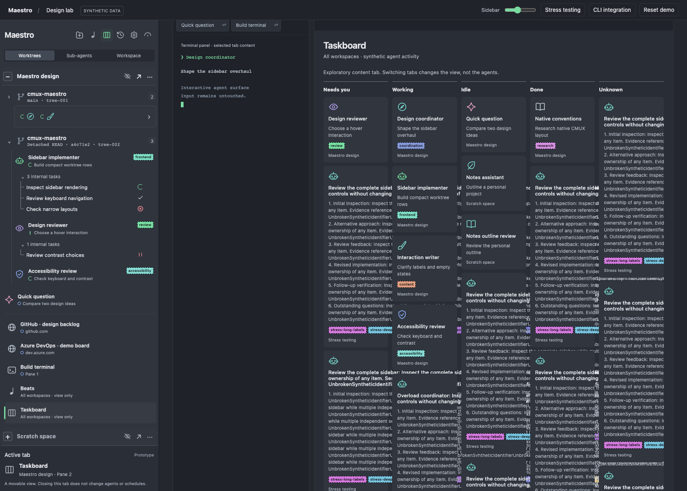
S41 First viewport of the cross-workspace status overview; stress data tests card density without claiming every long record is visible.current-design; tickets #86, #87 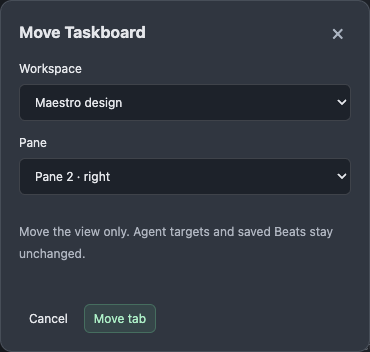
S42 Utility views move independently of agents and schedules.current-design; tickets #86 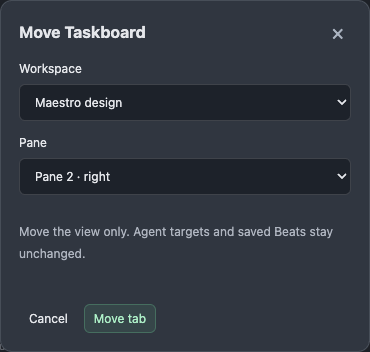
S43 Known mismatch: pane positions reorder while Move labels retain hardcoded left/right text.demonstrated-defect; tickets #86 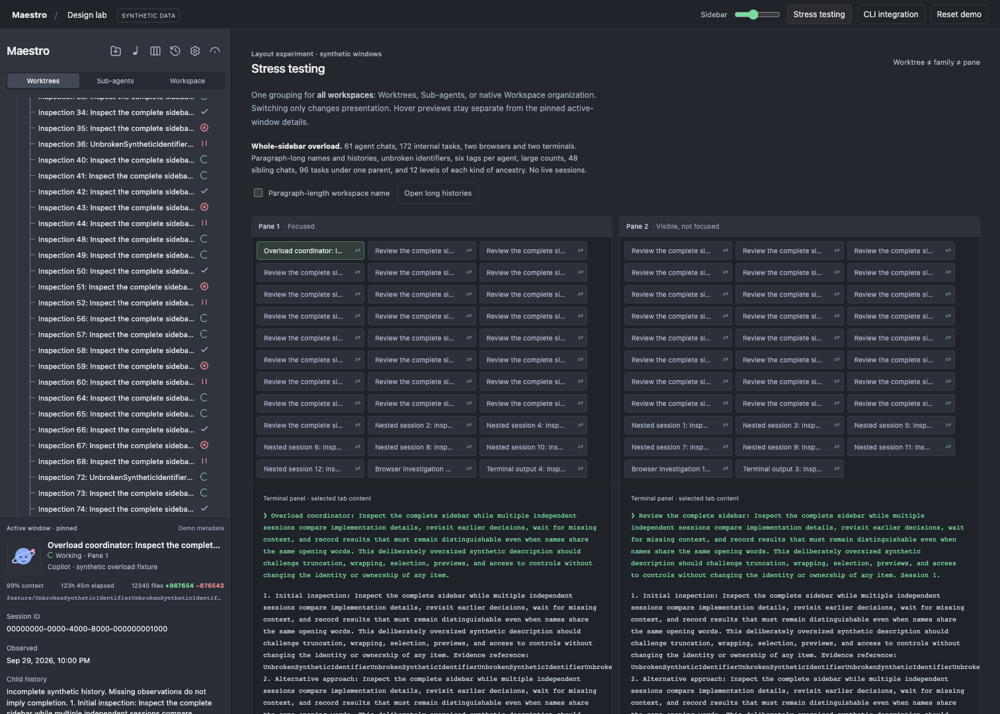
S44 Overload fixture exercises all row types, long identities, metadata, counters and deep/wide trees.current-design; tickets #58, #59, #100, #131 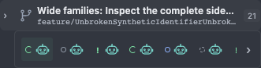
S45 All visible agents belong to one icon-only scrolling card; no tags or grid.current-design; tickets #58, #51 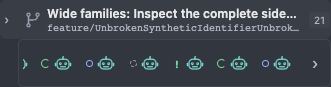
S46 End of the same icon card; local scrolling exposes later participants.current-design; tickets #58 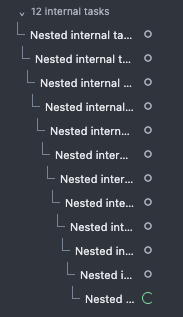
S47 Deep internal-task ancestry at 280px retains a fixed right edge and narrower indentation.current-design; tickets #58, #131 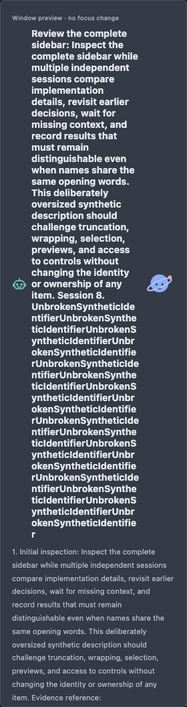
S48 Long names and histories wrap in the hover; density remains a review concern.current-design; tickets #100, #105 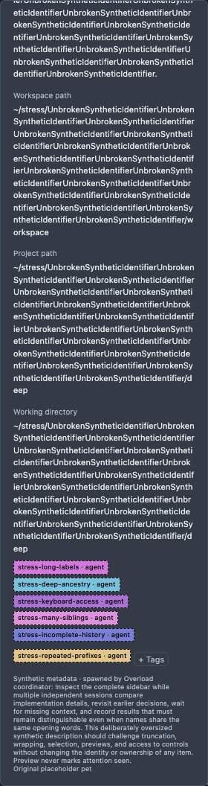
S49 Raw paths and owned tags remain available without horizontal hover scrolling.current-design; tickets #73, #77, #112 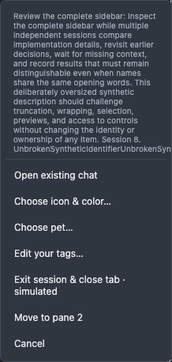
S50 Known long-name action-menu overflow; the approved hover fix does not cover this menu.demonstrated-defect; tickets #43, #106 S51 History still overflows and requires extensive scrolling under paragraph-scale outcomes.demonstrated-defect; tickets #48 S52 Workspace header remains contained with a paragraph-length name; full value belongs in details.current-design; tickets #52, #58 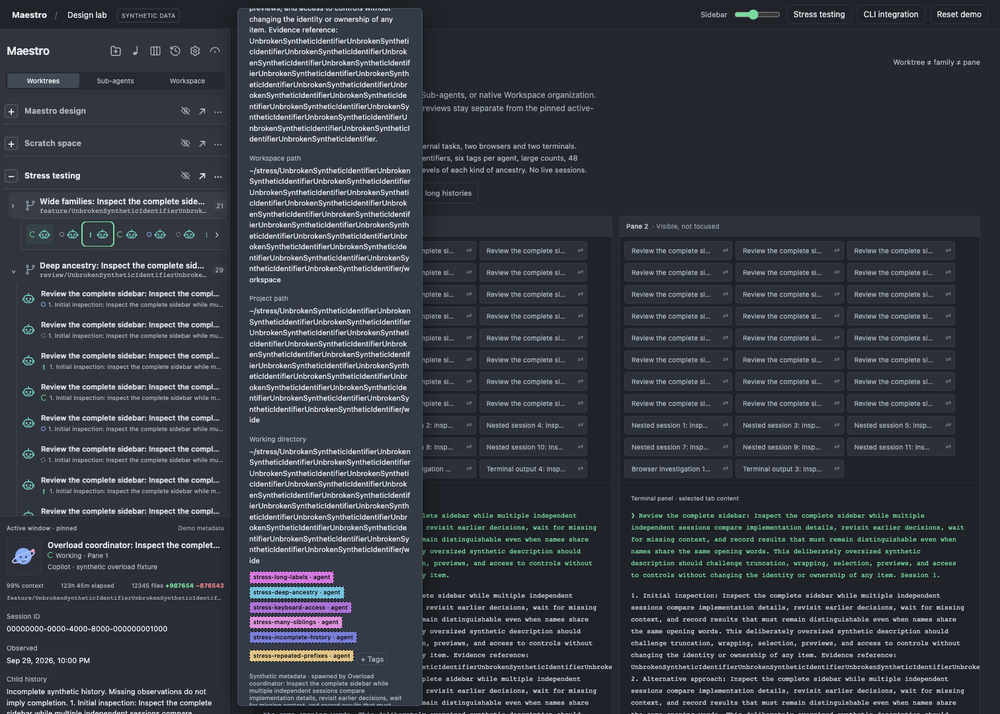
S53 Independent finding: a new preview subject inherits the previous subject's scroll position.demonstrated-defect; tickets #105 S54 Independent finding: pointer departure can hide a preview whose copy control has keyboard focus.demonstrated-defect; tickets #112 S55 Independent finding: closing a preview-originated dialog loses the visible keyboard return target.demonstrated-defect; tickets #112, #105 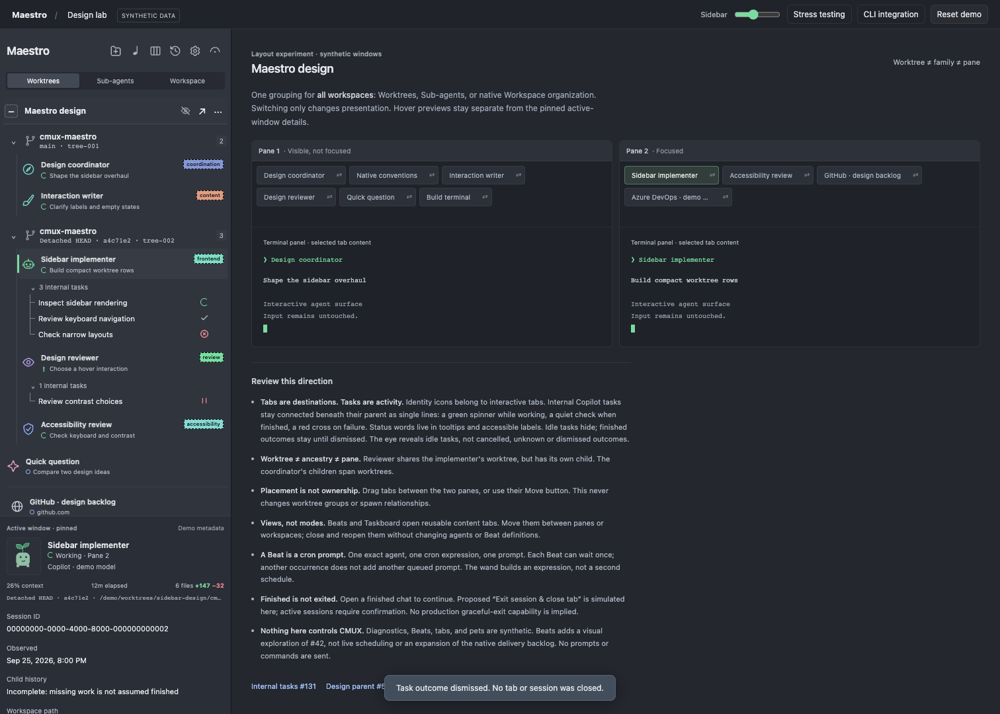
S56 Independent finding: dismissing the last outcome can filter its finished parent and leave focus on the document body; the real tab stays open.demonstrated-defect; tickets #131, #48